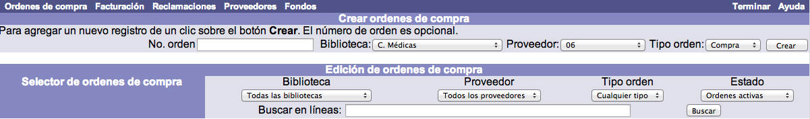
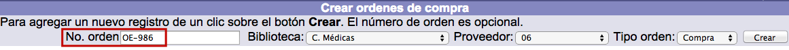
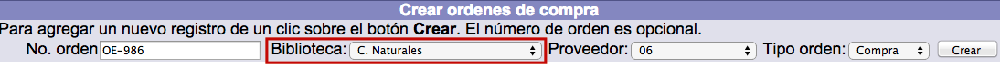
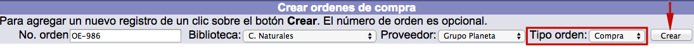
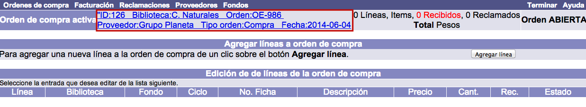
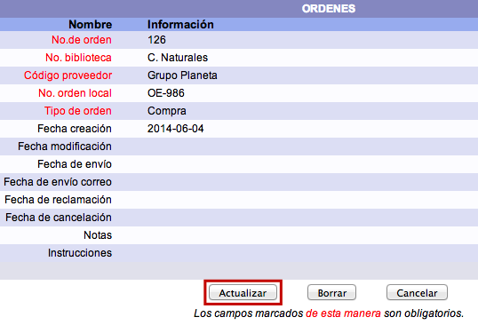
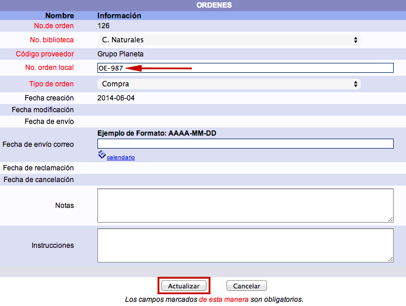

Como ya se ha comentado, este elemento es el primero que debe crearse para iniciar el flujo de adquisiciones. Cada orden de compra se identifica con una clave que puede ser asignada por el sistema automáticamente o por la institución, si así lo decide.
Existen dos estados de órdenes de compra:
- Abiertas: son aquellas que permiten seguir agregando líneas a la orden de compra. Es decir, las órdenes abiertas admiten la inclusión de nueva información sobre pedidos de materiales.
- Cerradas: no permiten incluir nuevas líneas de compra de materiales.

Creación de órdenes
El procedimiento a seguir es el siguiente:
- Hacer clic sobre la opción Órdenes de compra de la barra de herramientas del módulo.
- En la pantalla de gestión de órdenes, introducir la clave a asignar en el campo No. orden de la sección Crear órdenes de compra. Esta clave puede ser alfanumérica y de hasta 30 caracteres. Si se decide no añadir este identificador, el sistema lo hace de forma automática incluyendo el prefijo “O” delante de la secuencia numérica.

- Elegir la biblioteca para la que está creando la orden en el campo Biblioteca de la sección Crear órdenes de compra.

- Elegir el proveedor al que se va a enviar la orden en el campo Proveedor de la sección Crear órdenes de compra.

- Elegir el tipo de la orden a crear (compra, canje o donación) en el campo Tipo orden de la sección Crear órdenes de compra. A continuación , hacer clic en el botón Crear.

- El sistema genera la orden de compra y despliega la pantalla para agregar líneas a dicha orden (no obstante, esta acción puede llevarse a cabo posteriormente). Los datos sobre la orden activa se muestran en la parte superior.

Edición de órdenes
Siempre que sea necesario, es posible realizar modificaciones en los datos recogidos para una orden de compra.
El procedimiento a seguir es el siguiente:
- Hacer clic sobre la información de Orden de compra activa.

- Se despliega el registro correspondiente a la orden de compra concreta. Hacer clic en el botón Actualizar (o Cancelar, si se desea regresar a la pantalla anterior). Los campos que se presentan en dicho registro son los siguientes:
- No. orden: número identificador interno (ID) que otorga el sistema. No confundir con el que se asigna manualmente al crear la orden de compra.
- No. biblioteca, Código proveedor, No. orden local, Tipo de orden: se corresponden con los campos ya mencionados en el proceso de creación de la orden.
- Fecha creación: fecha en que se genera la orden. Asignada automáticamente por el sistema.
- Fecha modificación: última fecha en que se ha realizado algún cambio en el registro de la orden. Asignada automáticamente por el sistema.
- Fecha de envío: fecha en que el proveedor envía sus materiales.
- Fecha de envío correo: fecha en que se ha enviado la orden al proveedor por correo.
- Fecha de reclamación: fecha en que se ha llevado a cabo la reclamación sobre algún material al proveedor.
- Fecha de cancelación: fecha en que se ha realizado la anulación de la orden de compra.
- Notas: texto auxiliar informativo sobre la orden.
- Instrucciones: directrices que deben seguirse al recibir los materiales ordenados o durante el periodo que dure la orden activa.

- Realizar los cambios necesarios y hacer clic de nuevo en el botón Actualizar para guardar la información.
